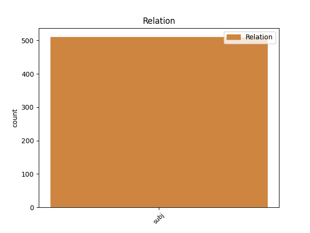
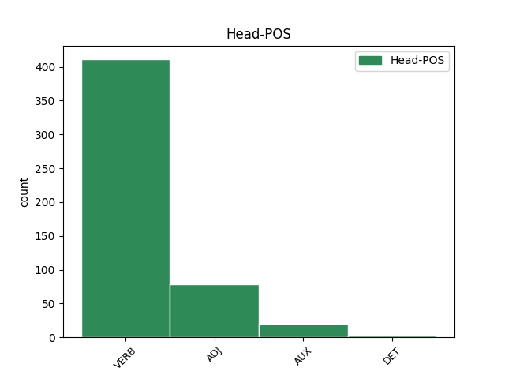
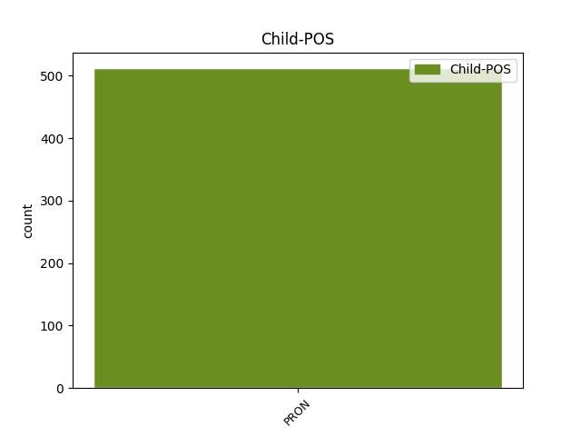

Distribution of features within this leaf



Agreement Rules sorted by frequency.
- When the dependent token is the subject(subj) of the head token, and the dependent token is PRON.
1 و _ _ _ _ 0 _ _ _
2 تردد _ _ _ _ 0 _ _ _
3 أن _ _ _ _ 0 _ _ _
4 هم هُوَ PRON SP---3MP4- Case=Acc|Gender=Masc|Number=Plur|Person=3|PronType=Prs 5 subj _ Gloss=he,it,she|LTranslit=huwa|Translit=hum|Vform=هُم
5 جلبوا جَلَب VERB VP-A-3MP-- Aspect=Perf|Gender=Masc|Number=Plur|Person=3|Voice=Act 0 _ _ _
6 مع _ _ _ _ 0 _ _ _
7 هم _ _ _ _ 0 _ _ _
8 المتفجرات _ _ _ _ 0 _ _ _
9 و _ _ _ _ 0 _ _ _
10 الذخيرة _ _ _ _ 0 _ _ _
11 لأن _ _ _ _ 0 _ _ _
12 ذلك _ _ _ _ 0 _ _ _
13 جزء _ _ _ _ 0 _ _ _
14 من _ _ _ _ 0 _ _ _
15 العادات _ _ _ _ 0 _ _ _
16 المتبعة _ _ _ _ 0 _ _ _
17 فى _ _ _ _ 0 _ _ _
18 قرية _ _ _ _ 0 _ _ _
19 هم _ _ _ _ 0 _ _ _
20 حيث _ _ _ _ 0 _ _ _
21 اعتاد _ _ _ _ 0 _ _ _
22 سكان _ _ _ _ 0 _ _ _
23 ها _ _ _ _ 0 _ _ _
24 اطلاق _ _ _ _ 0 _ _ _
25 النار _ _ _ _ 0 _ _ _
26 فى _ _ _ _ 0 _ _ _
27 الهواء _ _ _ _ 0 _ _ _
28 خلال _ _ _ _ 0 _ _ _
29 هذه _ _ _ _ 0 _ _ _
30 الاحتفالات _ _ _ _ 0 _ _ _
31 . _ _ _ _ 0 _ _ _
Disagree Examples:
1 و _ _ _ _ 0 _ _ _
2 أفادت _ _ _ _ 0 _ _ _
3 البحرية _ _ _ _ 0 _ _ _
4 الروسية _ _ _ _ 0 _ _ _
5 ان _ _ _ _ 0 _ _ _
6 الغواصة _ _ _ _ 0 _ _ _
7 مجهزة _ _ _ _ 0 _ _ _
8 ب _ _ _ _ 0 _ _ _
9 24 _ _ _ _ 0 _ _ _
10 صاروخا _ _ _ _ 0 _ _ _
11 الا _ _ _ _ 0 _ _ _
12 ان _ _ _ _ 0 _ _ _
13 ايا _ _ _ _ 0 _ _ _
14 من _ _ _ _ 0 _ _ _
15 ها هُوَ PRON SP---3FS2- Case=Gen|Gender=Fem|Number=Sing|Person=3|PronType=Prs 17 subj _ Gloss=he,it,she|LTranslit=huwa|Translit=hā|Vform=هَا
16 لا _ _ _ _ 0 _ _ _
17 يملك مَلَك VERB VIIA-3MS-- Aspect=Imp|Gender=Masc|Mood=Ind|Number=Sing|Person=3|VerbForm=Fin|Voice=Act 0 _ _ _
18 رأسا _ _ _ _ 0 _ _ _
19 نوويا _ _ _ _ 0 _ _ _
20 . _ _ _ _ 0 _ _ _
1 و _ _ _ _ 0 _ _ _
2 يقوم _ _ _ _ 0 _ _ _
3 عرفات _ _ _ _ 0 _ _ _
4 منذ _ _ _ _ 0 _ _ _
5 فشل _ _ _ _ 0 _ _ _
6 قمة _ _ _ _ 0 _ _ _
7 كامب _ _ _ _ 0 _ _ _
8 ديفيد _ _ _ _ 0 _ _ _
9 في _ _ _ _ 0 _ _ _
10 25 _ _ _ _ 0 _ _ _
11 تموز _ _ _ _ 0 _ _ _
12 / _ _ _ _ 0 _ _ _
13 يوليو _ _ _ _ 0 _ _ _
14 ب _ _ _ _ 0 _ _ _
15 جولة _ _ _ _ 0 _ _ _
16 قادت قَاد VERB VP-A-3FS-- Aspect=Perf|Gender=Fem|Number=Sing|Person=3|Voice=Act 0 _ _ _
17 ه هُوَ PRON SP---3MS4- Case=Acc|Gender=Masc|Number=Sing|Person=3|PronType=Prs 16 subj _ Gloss=he,it,she|LTranslit=huwa|Translit=hu|Vform=هُ
18 الى _ _ _ _ 0 _ _ _
19 اكثر _ _ _ _ 0 _ _ _
20 من _ _ _ _ 0 _ _ _
21 عشرين _ _ _ _ 0 _ _ _
22 دولة _ _ _ _ 0 _ _ _
23 . _ _ _ _ 0 _ _ _
24 و _ _ _ _ 0 _ _ _
25 لم _ _ _ _ 0 _ _ _
26 ينجح _ _ _ _ 0 _ _ _
27 في _ _ _ _ 0 _ _ _
28 الحصول _ _ _ _ 0 _ _ _
29 على _ _ _ _ 0 _ _ _
30 دعم _ _ _ _ 0 _ _ _
31 واضح _ _ _ _ 0 _ _ _
32 ل _ _ _ _ 0 _ _ _
33 إعلان _ _ _ _ 0 _ _ _
34 دولة _ _ _ _ 0 _ _ _
35 فلسطينية _ _ _ _ 0 _ _ _
36 في _ _ _ _ 0 _ _ _
37 الثالث _ _ _ _ 0 _ _ _
38 عشرمن _ _ _ _ 0 _ _ _
39 الشهر _ _ _ _ 0 _ _ _
40 المقبل _ _ _ _ 0 _ _ _
41 . _ _ _ _ 0 _ _ _
1 بعض _ _ _ _ 0 _ _ _
2 اللبنانيين _ _ _ _ 0 _ _ _
3 يناقشون _ _ _ _ 0 _ _ _
4 اليوم _ _ _ _ 0 _ _ _
5 ب _ _ _ _ 0 _ _ _
6 الأفكار _ _ _ _ 0 _ _ _
7 و _ _ _ _ 0 _ _ _
8 الفرضيات _ _ _ _ 0 _ _ _
9 . _ _ _ _ 0 _ _ _
10 بعض _ _ _ _ 0 _ _ _
11 هم _ _ _ _ 0 _ _ _
12 الآخر _ _ _ _ 0 _ _ _
13 يناقش _ _ _ _ 0 _ _ _
14 ب _ _ _ _ 0 _ _ _
15 الوقائع _ _ _ _ 0 _ _ _
16 و _ _ _ _ 0 _ _ _
17 الأرقام _ _ _ _ 0 _ _ _
18 . _ _ _ _ 0 _ _ _
19 و _ _ _ _ 0 _ _ _
20 هٰذا _ _ _ _ 0 _ _ _
21 من _ _ _ _ 0 _ _ _
22 غير _ _ _ _ 0 _ _ _
23 استبعاد _ _ _ _ 0 _ _ _
24 الناطقين _ _ _ _ 0 _ _ _
25 ب _ _ _ _ 0 _ _ _
26 لسان _ _ _ _ 0 _ _ _
27 مصالح _ _ _ _ 0 _ _ _
28 هم _ _ _ _ 0 _ _ _
29 في _ _ _ _ 0 _ _ _
30 الجانبين _ _ _ _ 0 _ _ _
31 ، _ _ _ _ 0 _ _ _
32 و _ _ _ _ 0 _ _ _
33 هم _ _ _ _ 0 _ _ _
34 اكبر _ _ _ _ 0 _ _ _
35 في _ _ _ _ 0 _ _ _
36 الفئـة _ _ _ _ 0 _ _ _
37 الأولى _ _ _ _ 0 _ _ _
38 من _ _ _ _ 0 _ _ _
39 هم _ _ _ _ 0 _ _ _
40 في _ _ _ _ 0 _ _ _
41 الثانية _ _ _ _ 0 _ _ _
42 لأن _ _ _ _ 0 _ _ _
43 ها هُوَ PRON SP---3FS4- Case=Acc|Gender=Fem|Number=Sing|Person=3|PronType=Prs 44 subj _ Gloss=he,it,she|LTranslit=huwa|Translit=hā|Vform=هَا
44 أقــرب أَقرَب ADJ A-----MS1I Case=Nom|Definite=Ind|Gender=Masc|Number=Sing 0 _ _ _
45 الى _ _ _ _ 0 _ _ _
46 مواقع _ _ _ _ 0 _ _ _
47 السلطـــة _ _ _ _ 0 _ _ _
48 و _ _ _ _ 0 _ _ _
49 النفوذ _ _ _ _ 0 _ _ _
50 و _ _ _ _ 0 _ _ _
51 المنافع _ _ _ _ 0 _ _ _
52 . _ _ _ _ 0 _ _ _
1 و _ _ _ _ 0 _ _ _
2 تبلغ _ _ _ _ 0 _ _ _
3 القيمة _ _ _ _ 0 _ _ _
4 الاسمية _ _ _ _ 0 _ _ _
5 ل _ _ _ _ 0 _ _ _
6 الشركة _ _ _ _ 0 _ _ _
7 17 _ _ _ _ 0 _ _ _
8 بليون _ _ _ _ 0 _ _ _
9 جنيه _ _ _ _ 0 _ _ _
10 ( _ _ _ _ 0 _ _ _
11 4 _ _ _ _ 0 _ _ _
12 بلايين _ _ _ _ 0 _ _ _
13 دولار _ _ _ _ 0 _ _ _
14 ) _ _ _ _ 0 _ _ _
15 و _ _ _ _ 0 _ _ _
16 السوقية _ _ _ _ 0 _ _ _
17 27 _ _ _ _ 0 _ _ _
18 بليون _ _ _ _ 0 _ _ _
19 جنيه _ _ _ _ 0 _ _ _
20 ( _ _ _ _ 0 _ _ _
21 3،6 _ _ _ _ 0 _ _ _
22 بليون _ _ _ _ 0 _ _ _
23 دولار _ _ _ _ 0 _ _ _
24 ) _ _ _ _ 0 _ _ _
25 و _ _ _ _ 0 _ _ _
26 هي هُوَ PRON SP---3FS1- Case=Nom|Gender=Fem|Number=Sing|Person=3|PronType=Prs 27 subj _ Gloss=he,it,she|LTranslit=huwa|Translit=hiya|Vform=هِيَ
27 أول أَوَّل ADJ A-----MS1R Case=Nom|Definite=Cons|Gender=Masc|Number=Sing 0 _ _ _
28 شركة _ _ _ _ 0 _ _ _
29 عملاقة _ _ _ _ 0 _ _ _
30 تُطرح _ _ _ _ 0 _ _ _
31 في _ _ _ _ 0 _ _ _
32 هذا _ _ _ _ 0 _ _ _
33 الاطار _ _ _ _ 0 _ _ _
34 . _ _ _ _ 0 _ _ _
1 * _ _ _ _ 0 _ _ _
2 تزايد _ _ _ _ 0 _ _ _
3 حاجة _ _ _ _ 0 _ _ _
4 الولايات _ _ _ _ 0 _ _ _
5 المتحدة _ _ _ _ 0 _ _ _
6 ل _ _ _ _ 0 _ _ _
7 النفط _ _ _ _ 0 _ _ _
8 * _ _ _ _ 0 _ _ _
9 تصنف _ _ _ _ 0 _ _ _
10 الولايات _ _ _ _ 0 _ _ _
11 المتحدة _ _ _ _ 0 _ _ _
12 ضمن _ _ _ _ 0 _ _ _
13 الدول _ _ _ _ 0 _ _ _
14 الكبرى _ _ _ _ 0 _ _ _
15 المنتجة _ _ _ _ 0 _ _ _
16 ل _ _ _ _ 0 _ _ _
17 النفط _ _ _ _ 0 _ _ _
18 و _ _ _ _ 0 _ _ _
19 المستوردة _ _ _ _ 0 _ _ _
20 ل _ _ _ _ 0 _ _ _
21 ه _ _ _ _ 0 _ _ _
22 في _ _ _ _ 0 _ _ _
23 نفس _ _ _ _ 0 _ _ _
24 الوقت _ _ _ _ 0 _ _ _
25 ، _ _ _ _ 0 _ _ _
26 و _ _ _ _ 0 _ _ _
27 هي _ _ _ _ 0 _ _ _
28 تعتبر _ _ _ _ 0 _ _ _
29 ثالث _ _ _ _ 0 _ _ _
30 دولة _ _ _ _ 0 _ _ _
31 منتجة _ _ _ _ 0 _ _ _
32 ل _ _ _ _ 0 _ _ _
33 النفط _ _ _ _ 0 _ _ _
34 في _ _ _ _ 0 _ _ _
35 العالم _ _ _ _ 0 _ _ _
36 لكن _ _ _ _ 0 _ _ _
37 نصيب _ _ _ _ 0 _ _ _
38 ها _ _ _ _ 0 _ _ _
39 من _ _ _ _ 0 _ _ _
40 احتياطات _ _ _ _ 0 _ _ _
41 النفط _ _ _ _ 0 _ _ _
42 العالمية _ _ _ _ 0 _ _ _
43 المثبتة _ _ _ _ 0 _ _ _
44 لا _ _ _ _ 0 _ _ _
45 يتجاوز _ _ _ _ 0 _ _ _
46 2 _ _ _ _ 0 _ _ _
47 في _ _ _ _ 0 _ _ _
48 المائة _ _ _ _ 0 _ _ _
49 ، _ _ _ _ 0 _ _ _
50 و _ _ _ _ 0 _ _ _
51 هي هُوَ PRON SP---3FS1- Case=Nom|Gender=Fem|Number=Sing|Person=3|PronType=Prs 53 subj _ Gloss=he,it,she|LTranslit=huwa|Translit=hiya|Vform=هِيَ
52 أيضاً _ _ _ _ 0 _ _ _
53 أكبر أَكبَر ADJ A-----MS1R Case=Nom|Definite=Cons|Gender=Masc|Number=Sing 0 _ _ _
54 دولة _ _ _ _ 0 _ _ _
55 مستهلكة _ _ _ _ 0 _ _ _
56 ل _ _ _ _ 0 _ _ _
57 النفط _ _ _ _ 0 _ _ _
58 . _ _ _ _ 0 _ _ _